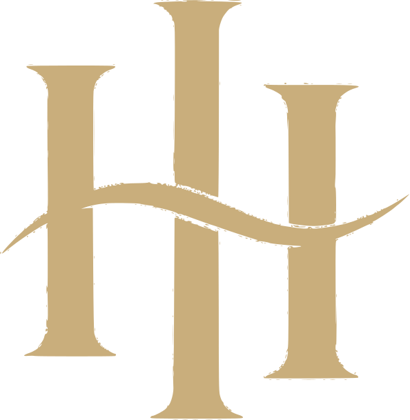
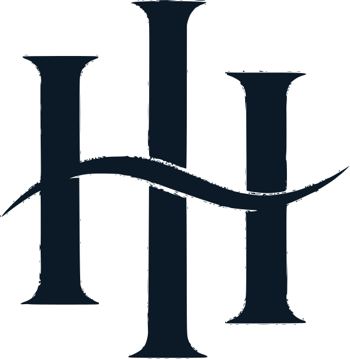

03Tried on the site

Nav — gold caps lockup at 21px cap height, 247px wide

Mobile 390 — the lockup still clears the menu button

Footer — full lockup with FILMS, and the seal as a stamp beside it
Both were supplied as dark-blue-on-black bitmaps. I rebuilt each one as a vector and split it into the pieces a site actually needs — nav lockup, full lockup, badge, and a small mark — then recoloured to the palette. Nothing here is a screenshot: these are path data, so they stay sharp at any size.
Below ~300px the FILMS line stops resolving and reads as a smudge — so the nav uses the caps line alone and the full lockup is held for footer, end cards and print.


Every asset exists in gold, cream and navy, as both SVG and PNG master. Files: brand/logos/ — 24 files. Live trial: site-v3 on port 8097.